O que funciona, o que quebra e o que dá pra melhorar no site novo
Cada botão, link e formulário do site foi clicado e conferido, no computador e no celular. Abaixo, o que precisa de correção, em ordem de impacto, com print, causa provável e sugestão de ajuste.
Testado em 18/11/2026 · computador (tela de 1440 px) e celular (iPhone 13 simulado no Chrome)
18páginas, cada uma nas 2 telas
367botões clicados um a um
86links diferentes conferidos
31testes de formulário
Resumo
A base está bem feita: formulários validam, nada de imagem quebrada, nenhuma página escapa da tela no celular. Os problemas se concentram em dois lugares: o caminho de compra que sai do quiz da página inicial e as páginas que ainda estão em reforma.
4
Corrigir já. Travam a venda ou levam o visitante pra página de erro.
8
Ajustar. Atrapalham o uso, mas o visitante consegue seguir.
7
Sugestões. Melhorias de experiência e conversão.
Se der pra fazer só uma coisa hoje: o item 1. É uma linha de código e devolve o botão de compra pro visitante mais quente do site, quem acabou de responder o quiz.
Corrigir já
Problemas que fazem o visitante perder o caminho da compra ou cair numa página de erro.
1
A janela do setup aberta pela página inicial vem sem o botão "Quero este setup"
Página inicialComputador e celularEsforço: muito baixo
Onde
Página inicial, quiz "Vamos encontrar o plano ideal para sua loja", tela de resultado, link "Ver o que inclui".
O que acontece
A janela "Escolha seu setup" abre com preço e lista de itens, mas sem nenhum botão de ação. A mesma janela, aberta pela página Planos e preços, mostra o botão "Quero este setup", que leva pro WhatsApp do comercial.
Por que importa
Quem chega nessa janela pelo quiz é o visitante mais interessado do site: respondeu as perguntas, viu o plano e quis saber do setup pago. Justo ele fica sem o próximo passo.
Causa provável
Na página inicial, o botão dispara $dispatch('open-setup', { key, keys, recommended }) sem o campo whatsapp. Em Planos e preços o mesmo evento envia "whatsapp": "https://wa.me/551637069792". Como o botão da janela tem x-show="whatsapp", na página inicial ele some. O link escondido ainda fica montado como null?text=..., que aponta pra uma página 404.
Como corrigir
Enviar o whatsapp no $dispatch da página inicial, igual à página de planos. Ou, melhor, deixar o número como valor padrão dentro do componente da janela, pra nenhum outro ponto de entrada repetir o problema.
Como reproduzir
Abrir a página inicial e responder o quiz até o resultado.
Clicar em "Ver o que inclui", ao lado do setup.
Comparar com Planos e preços, link do setup em qualquer plano.
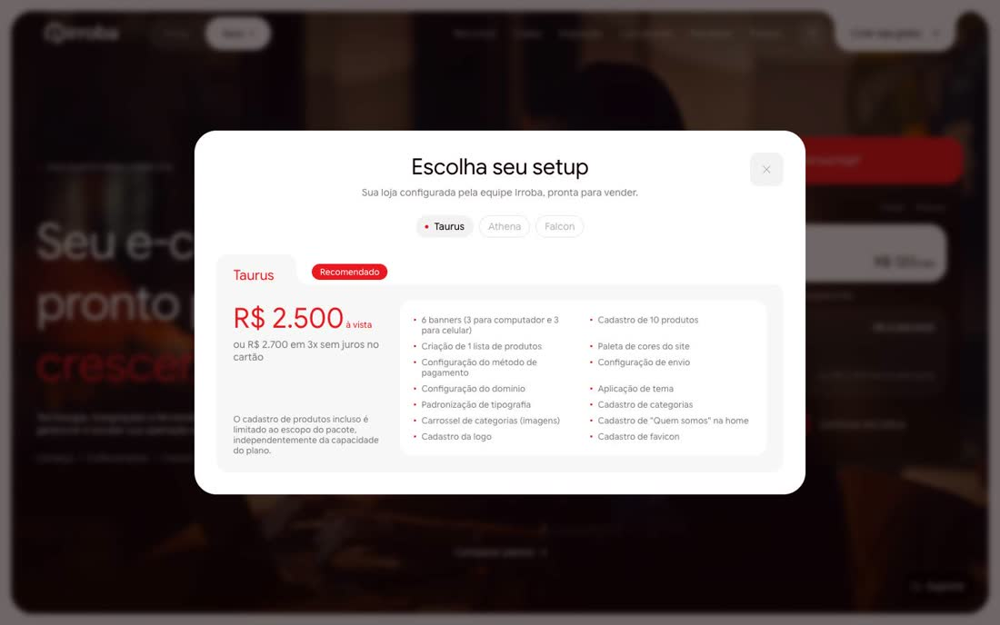
Aberta pela página inicial: preço e itens, nenhum botão.
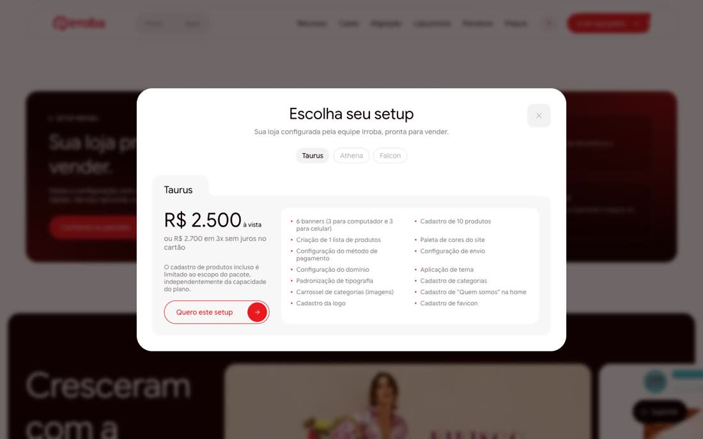
Aberta por Planos e preços: com o botão "Quero este setup".
2
O plano e o setup escolhidos não aparecem no cadastro
Quiz da página inicial e Planos e preçosEsforço: médio
Onde
Resultado do quiz, botão "Quero minha loja pronta". Também os botões "Testar 7 dias grátis" dos planos.
O que acontece
O link sai com o setup no endereço (?setup=taurus), mas o servidor redireciona pra /conta/cadastro/plano-bronze e o setup se perde no caminho. A tela de cadastro não mostra qual plano nem qual setup a pessoa escolheu, e não tem campo escondido guardando essa escolha.
Por que importa
A pessoa escolheu "loja pronta, plano Bronze, setup Taurus de R$ 2.500" e cai num cadastro genérico, sem confirmação do que está levando. Se o setup não chega no sistema, o comercial também não fica sabendo que ela queria pagar por ele.
Ressalva
O cadastro não foi concluído no teste (pra não criar conta falsa). Pode ser que o plano fique guardado na sessão do servidor. Vale o time de desenvolvimento confirmar. Mesmo que esteja guardado, mostrar "Plano Bronze + Setup Taurus" no topo do cadastro dá segurança pra quem está comprando.
Como corrigir
Manter o parâmetro setup no redirecionamento, exibir o resumo da escolha no cadastro (com opção de trocar) e gravar plano e setup junto com o lead.
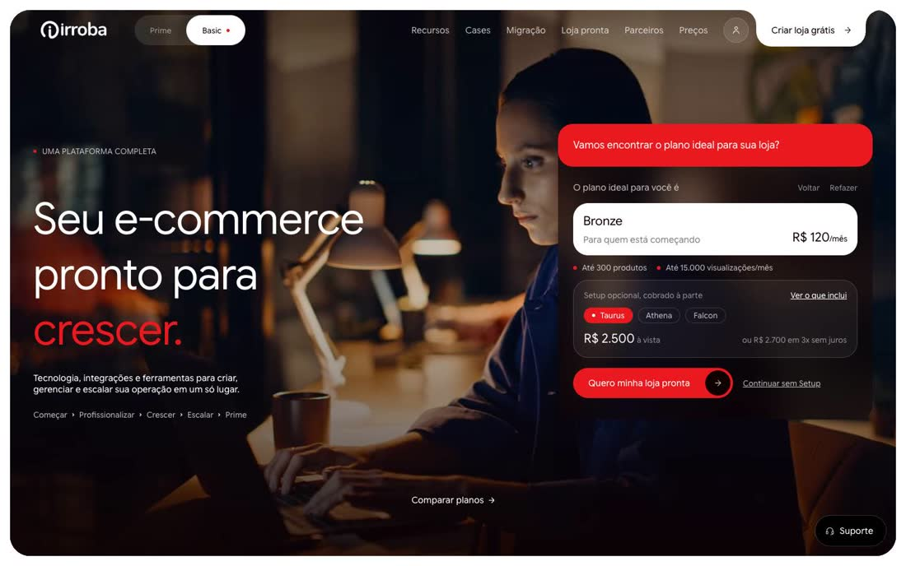
Escolha feita no quiz: Bronze + setup Taurus.
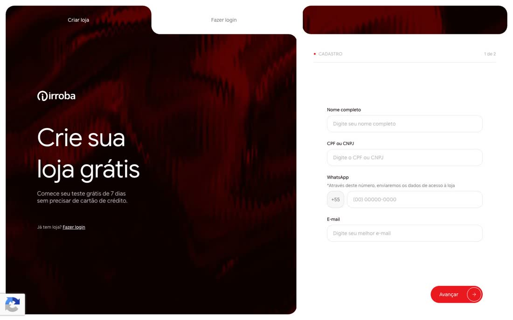
Onde o visitante cai: nenhuma menção ao plano ou ao setup.
3
"Explorar recursos" leva pra uma página em reforma (erro 503)
Página inicialSeja um parceiroEsforço: baixo
Onde
Página inicial, seção "Tudo o que sua operação precisa", botão "Explorar recursos" (vai pra /mais-recursos). O link de integrações da página Seja um parceiro (/integracoes) tem o mesmo problema.
O que acontece
As duas páginas respondem com código 503 e mostram "Estamos renovando esta página". A página de reforma em si é boa (oferece caminhos alternativos), mas é o botão principal de uma seção da página inicial levando a um beco.
Por que importa
O 503 é o código certo pra uma manutenção de horas. Se a reforma durar semanas, o Google entende que a página saiu do ar e tira ela das buscas.
Como corrigir
Enquanto a página não fica pronta, apontar "Explorar recursos" pra outro destino (Planos e preços, por exemplo) ou esconder o botão. Se a reforma for longa, trocar o 503 por um redirecionamento temporário (302).
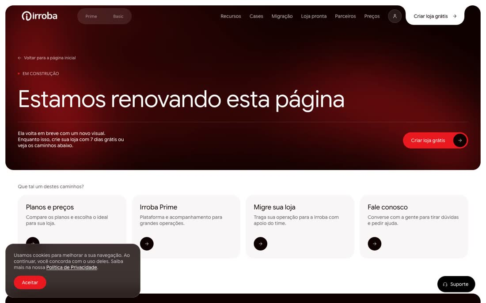
Destino do botão "Explorar recursos".
4
7 ferramentas marcadas "Em renovação" continuam clicáveis e levam pro erro 503
FerramentasEsforço: baixo
Onde
Página Ferramentas. Só o Sorteador de números funciona. As outras 7 têm o selo "Em renovação", mas mantêm a seta de ação ativa.
O que acontece
O selo avisa, mas o card se comporta como se funcionasse. Quem clica cai na página "Estamos renovando".
Como corrigir
Desativar a seta nos cards em renovação (sem link, visual apagado) ou trocar por "Me avise quando voltar", com captura de e-mail. A segunda opção transforma um beco sem saída em lead.
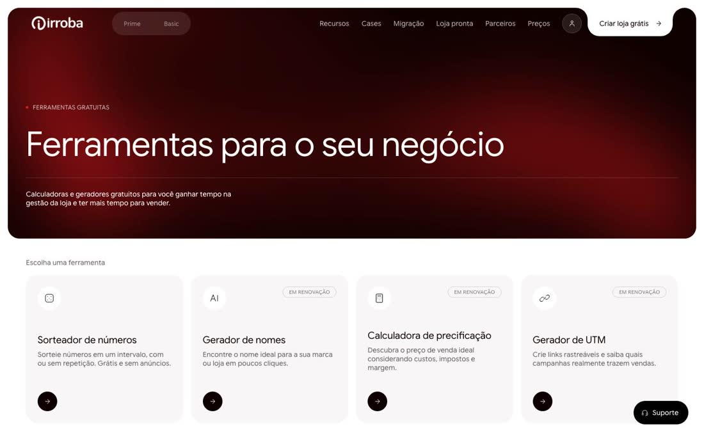
Selo "Em renovação" com a seta de ação ainda ativa.
Ajustar
Não impedem o visitante de seguir, mas criam atrito ou passam impressão de descuido.
5
O botão flutuante "Suporte" cobre outros botões
Todas as páginasCelular e computador
O que foi medido
No computador ele cobre o botão "Conhecer planos" da página inicial, 76% do link "Sobre a empresa" e 56% de "Preferências de privacidade", no rodapé.
No celular cobre até 31% de outros botões conforme a pessoa rola.
No formulário de Migre sua loja, no celular, o selo do reCAPTCHA (esquerda) e o Suporte (direita) cobrem os campos de e-mail e WhatsApp ao mesmo tempo.
Nada fica bloqueado de vez: rolando um pouco, dá pra clicar. Mas o visitante precisa "caçar" o botão.
Como corrigir
Dar um espaço no fim da página do tamanho do botão, pra o rodapé nunca ficar embaixo dele.
No celular, reduzir o Suporte a só o ícone.
Esconder o selo do reCAPTCHA. O Google permite, desde que o aviso de uso do reCAPTCHA apareça em texto perto do formulário.
Computador: "Suporte" em cima de "Conhecer planos".
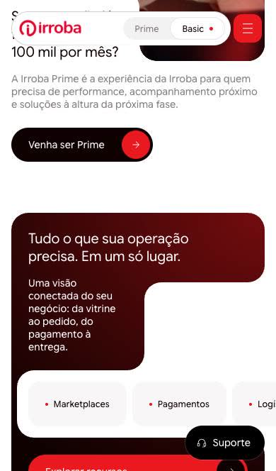
Celular: "Suporte" sobre os cards e o botão da seção.Migre sua loja: reCAPTCHA e Suporte sobre os campos.
6
Números no formato americano e rótulos crus do sistema
Planos e preçosBlack Friday
Planos e preços
R$0.01 por excedente, 1.75%, 1.50%, 1.25%, R$ 99.00 e 3000 sem ponto de milhar (enquanto a linha de cima mostra 15.000).
Black Friday
Percentuais com ponto (20.8%, 62.9%) e nomes vindos direto do sistema: Shopee_payment, Mercadopago, JT EXPRESS, Sao Paulo e Parana sem acento. Nos gráficos de pagamento e entrega, "Outros" fica com 49,5% e 56,8%: metade do dado não diz nada.
Por que importa
Preço é onde o visitante mais presta atenção. "R$0.01" e "1.75%" parecem erro de digitação e tiram confiança justo na página de decisão.
Como corrigir
Formatar todos os números com o padrão brasileiro (Intl.NumberFormat('pt-BR') no JavaScript ou o equivalente no servidor) e criar uma lista de nomes de exibição pros rótulos ("Shopee Pay", "Mercado Pago", "J&T Express", "São Paulo"). No Black Friday, mostrar mais fatias ou explicar o que entra em "Outros".
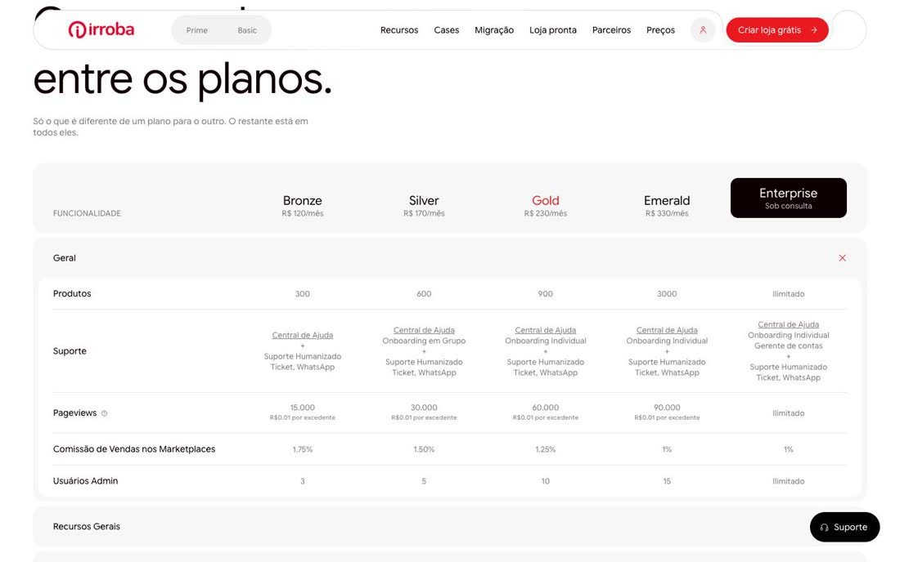
Planos e preços: "R$0.01", "1.75%", "3000".
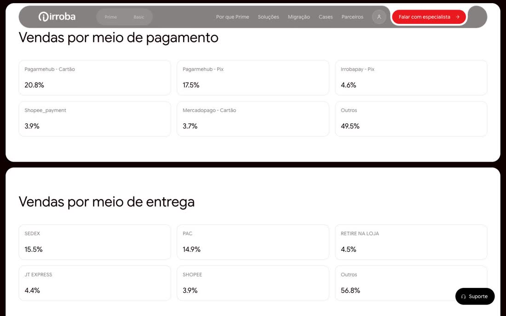
Black Friday: "Shopee_payment", "20.8%", "Outros 49.5%".
7
Alvos de toque pequenos demais no celular
Planos e preçosRodapéCelular
O que foi medido
17 ícones de informação (o "i" ao lado de "Integração marketplaces e hubs", "Super APP Irroba" etc.) com 10 x 10 px. Ícones de redes sociais entre 9 e 20 px. Links de texto soltos com 15 px de altura.
Referência
A recomendação de acessibilidade (WCAG 2.2) é no mínimo 24 x 24 px. Apple e Google recomendam 44 a 48 px. Abaixo disso, a pessoa erra o toque ou nem percebe que dá pra tocar.
Como corrigir
Aumentar a área clicável sem mudar o desenho: o ícone continua pequeno, mas ganha um espaço invisível em volta (padding) até 44 px.
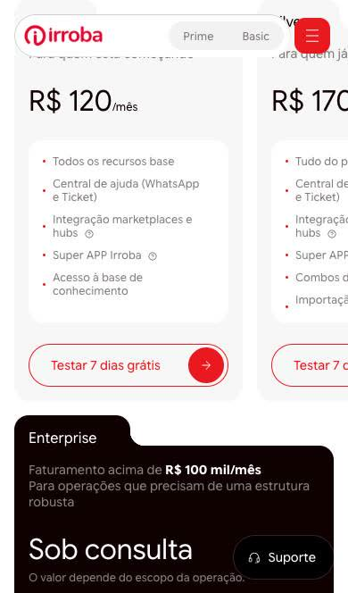
Os ícones "i" têm 10 x 10 px.
8
No celular, a tabela comparativa mostra só o plano Bronze
Planos e preçosCelular
O que acontece
Na seção que compara os planos, o celular exibe só a coluna do Bronze. Os outros planos não aparecem e nada indica como chegar até eles: sem seta, sem sombra na borda, sem aviso de "arraste".
Por que importa
Comparar é o motivo da tabela existir. No celular, ela vira uma lista do plano mais barato.
Como corrigir
Um seletor no topo pra escolher 2 planos e ver lado a lado (ex.: "Bronze x Gold"), ou fixar a coluna "Funcionalidade" e mostrar uma dica visual de arrastar com parte do próximo plano aparecendo.
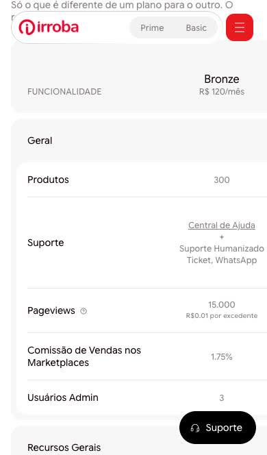
Celular: só a coluna Bronze, sem pista de que existem outras.
9
"Criar loja grátis" não aparece no cabeçalho do celular
Todas as páginasCelular
O que acontece
No computador, o botão principal do site fica sempre visível no cabeçalho. No celular, o cabeçalho tem logo, seletor Prime/Basic e menu, mas não o botão de criar loja. Dá pra ver no print do item 5.
Como corrigir
Um botão compacto "Criar loja" ao lado do menu. Se faltar espaço, o seletor Prime/Basic pode ir pra dentro do menu, já que ele é menos usado que a ação principal.
10
Formulário de Migre sua loja usa o texto de exemplo como rótulo
Migre sua loja
O que acontece
Os campos só têm o texto cinza de exemplo ("Digite seu nome e sobrenome"), que some quando a pessoa começa a digitar. Esse cinza sobre o fundo escuro tem contraste baixo.
Como corrigir
Rótulo fixo acima de cada campo, como já é feito na tela de cadastro (que está boa nesse ponto).
11
Dicas "i" não abrem pelo teclado, e há erros de JavaScript no console
Planos e preçosVárias páginas
Dicas
As explicações dos ícones "i" só aparecem passando o mouse. Quem navega pelo teclado (Tab) chega no ícone e a dica não abre. Correção: abrir também no foco e no toque.
Erros
Aparece de vez em quando o erro u is not a function no console do navegador. No teste não teve efeito visível, mas vale o time de desenvolvimento olhar antes que vire um bug de verdade.
12
Acabamento: círculo vazio no canto do cabeçalho
ComputadorPrioridade baixa
O que acontece
Quando a página é rolada, sobra um círculo vazio à direita do botão "Criar loja grátis". Parece ser a curva do desenho do cabeçalho do topo da página que continua aparecendo no cabeçalho rolado. Aparece em Planos e preços e no Black Friday, por exemplo.
Como corrigir
Confirmar com o time de design se é intencional. Se não for, esconder essa forma no estado rolado.
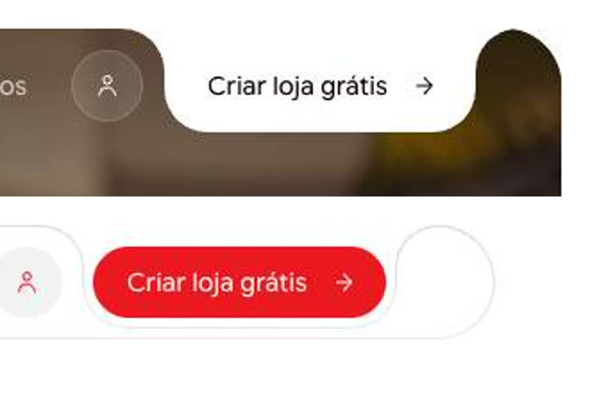
Em cima, o cabeçalho no topo da página. Embaixo, o cabeçalho rolado, com o círculo vazio à direita.
Velocidade e acessibilidade
Medido no celular simulado com 4G lento e processador 4 vezes mais lento, parecido com o teste de celular do Google. Duas rodadas por página.
Página
Conteúdo principal aparece
Celular ocupado depois
Página "pula"?
Peso total
Textos com contraste baixo
Início
1,5 s
0,9 a 1,3 s
não
1,7 MB
24 no celular, 16 no computador
Planos e preços
1,2 s
0,9 s
não
1,3 MB
75 no celular, 92 no computador
Black Friday
1,5 s
0,5 a 1,2 s
não
1,4 MB
32 no celular, 30 no computador
Migre sua loja
1,5 s
1,0 s
não
2,1 MB
73 no celular, 47 no computador
Prime
1,6 s
1,0 a 1,2 s
não
2,2 MB
7 no celular, 7 no computador
Criar loja
2,6 s
1,4 a 1,8 s
não
2,1 MB
5 no celular, 5 no computador
Como ler:
Aparece rápido. Em quase todas as páginas o conteúdo principal surge em 1,2 a 1,6 s. A meta do Google é até 2,5 s.
A tela de cadastro é a mais lenta. Leva 2,3 a 2,6 s pra aparecer e fica até 1,8 s ocupada depois. É justo a página onde a venda acontece, então é a primeira a investigar. Ela é a que carrega mais JavaScript (1,7 MB), incluindo o reCAPTCHA.
Não pula. Nada muda de lugar enquanto carrega. Ótimo.
Fica ocupado. Depois de aparecer, o celular passa de meio segundo a mais de um segundo processando JavaScript (a meta é até 0,2 s). Nesse intervalo, um toque pode demorar a responder. Cada página carrega de 1,1 a 1,7 MB de JavaScript, somando o código do site (jQuery e Alpine) e as ferramentas de marketing (Google Tag Manager, Hotjar, RD Station). Vale revisar quais etiquetas de marketing ainda são usadas e carregar as que ficarem só depois que a página estiver pronta.
Contraste. Vários textos de apoio em cinza claro ficam abaixo do mínimo de leitura (4,5 pra 1). Exemplos: passos inativos do quiz (#b7b3b3 no branco, 2,1 pra 1), texto rosa no vermelho do quiz (2,7 pra 1), itens do cabeçalho (3,8 pra 1), descrições nos cards de planos (3,9 pra 1) e o cabeçalho do Black Friday no celular (1,9 pra 1). Escurecer o cinza de apoio pra algo como #6b6565 resolve a maioria (5,7 pra 1 no branco).
Teclado. Na página inicial há áreas com rolagem lateral que não recebem foco pelo teclado, então quem navega com Tab não consegue rolar o conteúdo delas.
Esses números são de laboratório, não do Lighthouse oficial. Pra número oficial, rodar o PageSpeed Insights do Google (no dia do teste ele atingiu o limite de uso).
Sugestões de experiência
Não são erros. São pontos onde, na nossa leitura, o site pode converter mais ou confundir menos.
A
Elementos com cara de botão que não clicam
O caminho "Começar › Profissionalizar › Crescer › Escalar › Prime" da abertura e os cards "Marketplaces", "Pagamentos", "Logística" parecem clicáveis, mas não fazem nada. Ou viram links (cada etapa levando ao plano certo, cada card à explicação do recurso), ou perdem a aparência de botão.
B
Cadastro pede endereço no teste grátis
A segunda etapa do cadastro pede CEP e endereço pra um teste de 7 dias sem cartão. Cada campo a mais nessa hora derruba a conversão. Dá pra pedir o endereço depois, quando a pessoa for configurar o frete da loja.
C
Seletor Prime / Basic no cabeçalho
Os nomes não dizem o que muda, e em várias páginas (Planos e preços, Ferramentas, Mais recursos) nenhum dos dois aparece selecionado. Um visitante novo não sabe em qual lado do site está. Sugestão: nomes que falem do perfil ("Para começar" e "Para grandes operações") ou uma dica curta ao passar o mouse.
D
A página de Black Friday troca o menu pelo do Prime
Na Black Friday o cabeçalho passa a mostrar "Por que Prime, Soluções, Migração..." e o botão vira "Falar com especialista". Se a página é pra todos os lojistas, quem não é perfil Prime perde o menu de sempre. Vale confirmar se é intencional.
E
Cases sem números
A seção "Cresceram com a Irroba" mostra as lojas, mas não o resultado. Um número por case ("vendas 3x maiores em 12 meses", "migrou em 15 dias") é o que transforma vitrine em prova.
F
Depoimento longo demais
O depoimento em destaque é um bloco grande de texto. Cortar em duas ou três linhas com "ler mais" mantém a força sem cansar quem está rolando.
G
Seção de serviços com rolagem longa
A seção animada de serviços exige bastante rolagem, principalmente no celular, até liberar o resto da página. Encurtar a animação ou permitir pular evita que o visitante desista antes de chegar nos planos.
O que está bom
Vale registrar, até pra não mexer no que funciona.
Todos os formulários barram campo vazio e formato inválido antes de enviar.
Quem navega pelo teclado vê onde está: o foco é visível nos botões e links.
Nenhuma imagem quebrada, e todas têm texto alternativo pra leitor de tela.
Nenhuma página escapa da largura da tela no celular.
Título, descrição, um título principal por página e idioma definido: base certa pro Google.
O quiz de plano ideal na página inicial é uma ótima ideia de conversão. Só falta o botão do item 1.
A tabela comparativa no computador é clara, e as perguntas frequentes avisam o leitor de tela quando abrem e fecham.
A página "Estamos renovando" oferece caminhos alternativos, em vez de um erro seco.
A página não "pula" enquanto carrega.
Como foi testado
Navegador automatizado (Chrome) em duas telas: computador de 1440 x 900 px e celular iPhone 13 simulado.
Páginas: início, Planos e preços, Prime, Black Friday, Migre sua loja, Ferramentas, Sorteador de números, Mais recursos, Seja um parceiro, Sobre a empresa, Carreiras, Fale conosco, Segunda via, Mapa do site, Termos de uso, Política de privacidade, Criar loja e Login.
Botões: cada um foi clicado e o efeito registrado (abriu algo, rolou a página, navegou ou não fez nada). Os casos suspeitos foram conferidos à mão.
Links: cada endereço diferente foi aberto e o código de resposta conferido, incluindo redirecionamentos e links de WhatsApp.
Formulários: testados vazios e com dados inválidos, com o envio bloqueado. Nada chegou aos servidores da Irroba: nenhuma conta criada, nenhum contato enviado.
O que ficou de fora:
Central de ajuda (ajuda.irroba.com.br) e LinkedIn bloqueiam navegadores automatizados. Isso não quer dizer que estejam quebrados, só que não deu pra conferir por aqui.
O que acontece depois do cadastro, dentro da plataforma.
Safari e Android de verdade. O celular foi simulado no Chrome.